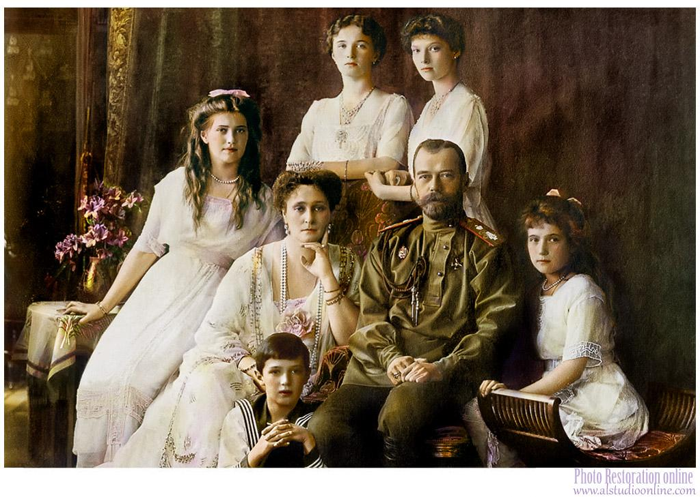
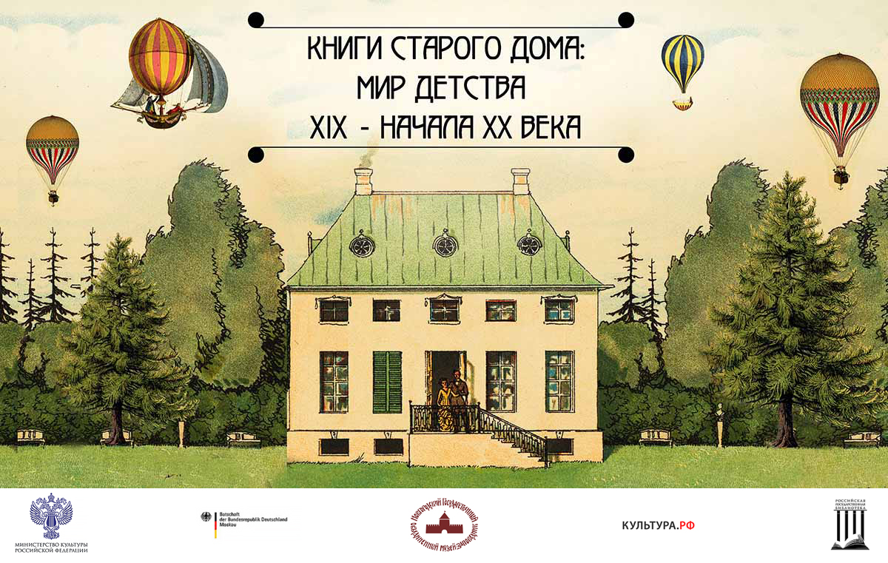

Поздравляем!
Ты справился со всеми заданиями в этом доме и смог разгадать Тайну его обитателей. Как ты уже догадался, это семья Николая II, последнего царя Российской Империи, в 1917 году при захвате власти большевиками она была сослана в Тобольск, а затем расстреляна в Екатеринбурге. Несмотря на все трудности и такой трагичный конец этого семейства, все они - Николай II, Александра Федоровна и их дети - Ольга, Татьяна, Мария, Анастасия и Алексей - очень любили книги и даже в свое последнее путешествие взяли их с собой. Книги сопровождали их в веселые и грустные моменты, каждое поколение передавало свои знания и ценности через свою любимую литературу, и это скрепляло их семейные узы. Даже сейчас, спустя более 100 лет, ты можешь увидеть не только фотографии и письма этой семьи, но и те издания, которые они читали в семейном кругу, и прикоснуться к их истории.
Дорогой друг!
Ты оказался в удивительном месте - в Старом доме, где живет множество прекрасных сказок, персонажей, и историй, среди них - история одной семьи. Это Бабушка и Дедушка, Родители и их Дети, и они так же, как и ты, любят играть, узнавать новое, и, конечно, любят книги. Для каждого из них эти книги свои: добрые, прекрасные, грустные, вдохновляющие,захватывающие - наверняка и у тебя есть твоя любимая литература. Мы предлагаем тебе поближе познакомиться с ними и разгадать их одну большую Тайну. Здесь для тебя зашифровано 9 загадок - 9 предметов, которые тебе нужно будет найти внутри Дома, и эти вещи так или иначе связаны с этими обитателями. Когда ты сможешь найти ответ, просто введи его на экране, и ты отгадаешь один из фрагментов загадки!